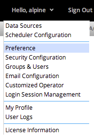

To open the Preferences Management dialog, click the user drop down, then click the Preferences button on the drop down menu.

The Preferences Management dialog provides access to Algorithm, System, Database, and UI Profile preferences. Changes are saved using the Save button on each tab. The user will be prompted to save or discard changes when changing sections.